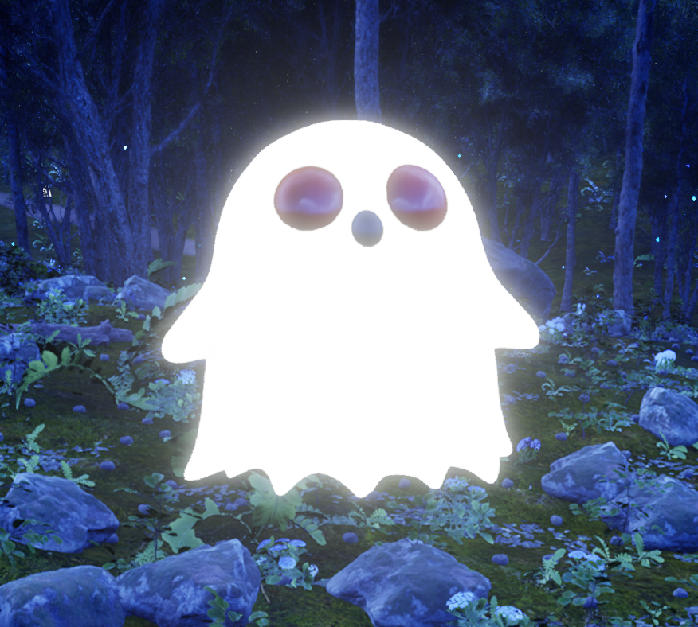

Thesis
The Encrypted Forest asks how surveillance systems disguise themselves through beauty and faith. By hiding technology inside a sacred-looking forest, the project explores how something that appears peaceful and pure can secretly be used to monitor and control, drawing directly on Nadim Samman's Poetics of Encryption.
Ideation
The concept started with the question of where people place unconditional trust. The forest, with its glowing spirits and pristine landscape, became the answer. Mother Ogre, an ancient guardian already built for a previous project, awakens to find the forest seemingly thriving but senses something is wrong. The spirits are mechanical drones. The trees and rocks conceal antennas, cameras, and servers. The illusion of harmony is the system's most effective tool. We researched existing references including Miyazaki's nature-versus-technology themes, Simon Stalenhag's mundane electronic landscapes, and The Matrix's concept of a managed artificial world before settling on a dispel mechanic as the core interaction, giving the player a way to strip away the illusion one object at a time.
Approach
I was responsible for building and assembling the full environment in Unreal Engine, from landscape sculpting and foliage placement to lighting and atmosphere. I managed the entire asset export pipeline from Blender, ensuring meshes, textures, and rigs translated cleanly into the engine. I implemented all interaction systems, including the dispel mechanic and note-drop behaviour, and developed the key visual effects: the ghost dissolve sequence and the final machine-tree explosion. I also brought Mother Ogre into the world, shaping her physical presence in the environment and integrating her into the third-person gameplay experience.
Creative Works
The final work is a third-person exploratory game experience in which the player embodies Mother Ogre, moving through a forest environment that gradually reveals its true nature. What begins as a sacred, glowing world slowly exposes itself as a concealed machine network. The experience ends with a confrontation and dissolution sequence, a visual and narrative crescendo that connects the opening thesis back to the player's own complicity in the world they explored. Target playtime is 5 to 7 minutes.
In collaboration with Cathy Tham.



Let's make something Fun.
Connect with me
celinetran707@gmail.com
Céline Tran
GitHub
github.com/celinetran07
© 2026 Celine Tran. All rights reserved.